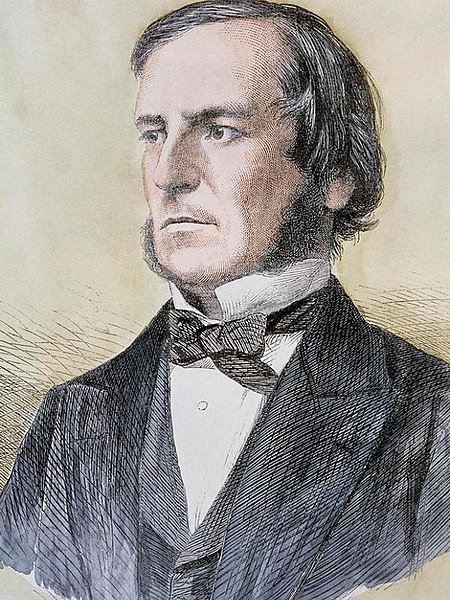
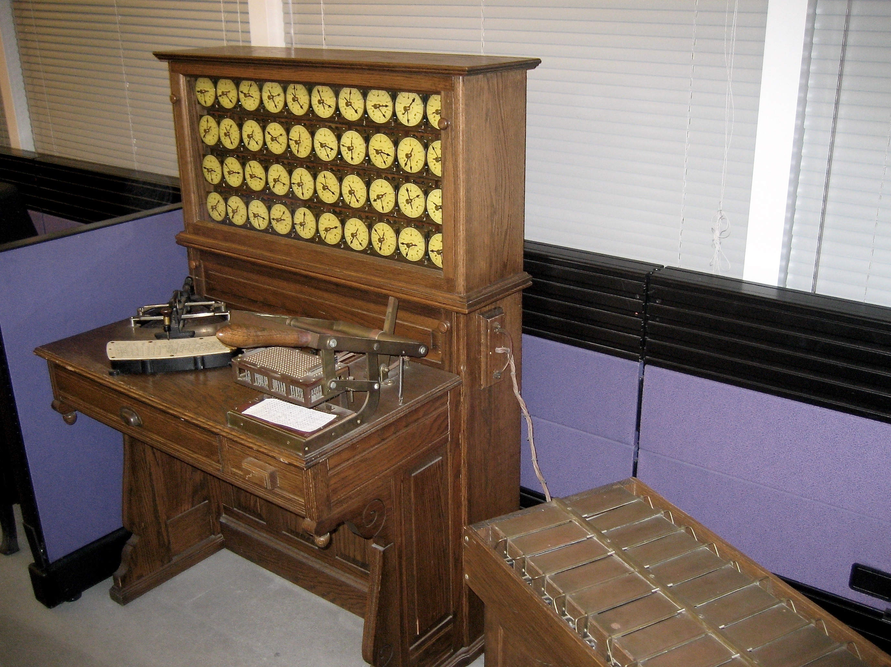

História da Computação
O desenvolvimento da tecnologia da computação foi a união de várias áreas do conhecimento humano, dentre as quais: a matemática, a eletrônica digital, a lógica de programação, entre outras.

A capacidade dos seres humanos em calcular quantidades dos mais variados modos foi um dos fatores que possibilitaram o desenvolvimento da matemática e da lógica. Nos primórdios da matemática e da álgebra, utilizavam-se os dedos das mãos para efetuar cálculos.
A mais antiga ferramenta conhecida para uso em computação foi o ábaco, e foi inventado na Babilônia por volta de 2400 a.C. O seu estilo original de uso, era desenhar linhas na areia com rochas. Ábacos, de um design mais moderno, ainda são usados como ferramentas de cálculo.
O ábaco dos romanos consistia de bolinhas de mármore que deslizavam numa placa de bronze cheia de sulcos. Também surgiram alguns termos matemáticos: em latim "calx" significa mármore, assim "calculos" era uma bolinha do ábaco, e fazer cálculos aritméticos era "calculare".
No século V a.C., na antiga Índia, o gramático Pānini formulou a gramática de Sânscrito usando 3959 regras conhecidas como Ashtadhyāyi, de forma bastante sistemática e técnica. Pānini usou meta-regras, transformações e recursividade com tamanha sofisticação que sua gramática possuía o poder computacional teórico tal qual a máquina de Turing.
Entre 200 a.C. e 400, os indianos também inventaram o logaritmo, e partir do século XIII tabelas logarítmicas eram produzidas por matemáticos islâmicos. Quando John Napier descobriu os logaritmos para uso computacional no século XVI, seguiu-se um período de considerável progresso na construção de ferramentas de cálculo.
John Napier (1550-1617), escocês inventor dos logaritmos, também inventou os ossos de Napier, que eram tabelas de multiplicação gravadas em bastão, o que evitava a memorização da tabuada.
A primeira máquina de verdade foi construída por Wilhelm Schickard (1592-1635), sendo capaz de somar, subtrair, multiplicar e dividir. Essa máquina foi perdida durante a guerra dos trinta anos, sendo que recentemente foi encontrada alguma documentação sobre ela. Durante muitos anos nada se soube sobre essa máquina, por isso, atribuía-se a Blaise Pascal (1623-1662) a construção da primeira máquina calculadora, que fazia apenas somas e subtrações.
Pascal, que aos 18 anos trabalhava com seu pai em um escritório de coleta de impostos na cidade de Rouen, desenvolveu a máquina para auxiliar o seu trabalho de contabilidade.
A calculadora usava engrenagens que a faziam funcionar de maneira similar a um odômetro.
Pascal recebeu uma patente do rei da França para que lançasse sua máquina no comércio. A comercialização de suas calculadoras não foi satisfatória devido a seu funcionamento pouco confiável, apesar de Pascal ter construído cerca de 50 versões.
A máquina Pascal foi criada com objetivo de ajudar seu pai a computar os impostos em Rouen, França. O projeto de Pascal foi bastante aprimorado pelo matemático alemão Gottfried Wilhelm Leibniz (1646-1726), que também inventou o cálculo, o qual sonhou que, um dia no futuro, todo o raciocínio pudesse ser substituído pelo girar de uma simples alavanca.
Em 1671, o filósofo e matemático alemão de Leipzig, Gottfried Wilhelm Leibniz introduziu o conceito de realizar multiplicações e divisões através de adições e subtrações sucessivas. Em 1694, a máquina foi construída, no entanto, sua operação apresentava muita dificuldade e era sujeita a erros.
Em 1820, o francês natural de Paris, Charles Xavier Thomas, conhecido como Thomas de Colmar, projetou e construiu uma máquina capaz de efetuar as 4 operações aritméticas básicas: a Arithmomet. Esta foi a primeira calculadora realmente comercializada com sucesso. Ela fazia multiplicações com o mesmo princípio da calculadora de Leibniz e efetuava as divisões com a assistência do usuário.
Todas essas máquinas, porém, estavam longe de serem consideradas um computador, pois não eram programáveis. Isto quer dizer que a entrada era feita apenas de números, mas não de instruções a respeito do que fazer com os números.
Os algoritmos
No século VII, o matemático indiano Brahmagupta explicou pela primeira vez o sistema de numeração hindu-arábico e o uso do 0. Aproximadamente em 825, o matemático persa Al-Khwarizmi escreveu o livro Calculando com numerais hindus, responsável pela difusão do sistema de numeração hindu-arábico no Oriente Médio, e posteriormente na Europa. Por volta do século XII houve uma tradução do mesmo livro para o latim: Algoritmi de número Indorum. Tais livros apresentaram novos conceitos para definir sequências de passos para completar tarefas, como aplicações de aritmética e álgebra. Por derivação do nome, atualmente usa-se o termo algoritmo.
A Revolução Industrial
Em 1801, na França, durante a Revolução Industrial, Joseph Marie Jacquard, mecânico francês, (1752-1834) inventou um tear mecânico controlado por grandes cartões perfurados. Sua máquina era capaz de produzir tecidos com desenhos bonitos e intrincados. Foi tamanho o sucesso que Jacquard foi quase morto quando levou o tear para Lyon, pois as pessoas tinham medo de perder o emprego. Em sete anos, já havia 11 mil teares desse tipo operando na França.
Babbage e Ada
A ideia de Jacquard atravessou o Canal da Mancha, onde inspirou Charles Babbage (1792-1871), um professor de matemática de Cambridge, a desenvolver uma máquina de "tecer números", uma máquina de calcular onde a forma de calcular pudesse ser controlada por cartões.

Foi com Charles Babbage que o computador moderno começou a ganhar forma, através de seu trabalho no engenho analítico. O equipamento, apesar de nunca ter sido construído com sucesso, possuía todas as funcionalidades do computador moderno. Foi descrito originalmente em 1837, mais de um século antes que qualquer equipamento do gênero tivesse sido construído com sucesso. O grande diferencial do sistema de Babbage era o fato que seu dispositivo foi projetado para ser programável, item imprescindível para qualquer computador moderno.
Tudo começou com a tentativa de desenvolver uma máquina capaz de calcular polinômios por meio de diferenças, o calculador diferencial. Enquanto projetava seu calculador diferencial, a ideia de Jacquard fez com que Babbage imaginasse uma nova e mais complexa máquina, o calculador analítico, extremamente semelhante ao computador atual.
O projeto, totalmente mecânico, era composto de uma memória, um engenho central, engrenagens e alavancas usadas para a transferência de dados da memória para o engenho central e dispositivos para entrada e saída de dados. O calculador utilizaria cartões perfurados e seria automático.
A calculadora analítica de Babbage foi uma inovação revolucionária em seu tempo. Consistia em um conjunto de rodas dentadas, o moinho, formando uma máquina de somar com precisão de cinquenta dígitos. As instruções eram lidas de cartões perfurados e armazenadas em um banco de mil registradores. Cada registrador era capaz de armazenar um número de cinquenta dígitos, que poderiam ser inseridos através de cartões.
O governo britânico financiou Babbage por algum tempo para construir sua invenção, mas ele não conseguiu completá-la dentro do prazo e não recebeu mais fundos. Partes da máquina de Babbage podem ser vistas no Museu Britânico, que também construiu uma versão completa usando as técnicas disponíveis na época.
Ada Lovelace, em colaboração com Babbage, foi uma figura fundamental nesse desenvolvimento. Ela é popularmente considerada a primeira programadora, tendo publicado os primeiros programas de computador em notas para o engenho analítico. Lovelace inventou conceitos fundamentais da programação, como sub-rotinas, loops e saltos condicionais.
Babbage enfrentou muitas dificuldades com a tecnologia da época, que não permitia a construção de componentes mecânicos com a precisão necessária. Apesar dos esforços, o projeto nunca foi concluído devido à falta de financiamento. Ada Lovelace e Charles Babbage foram visionários à frente de seu tempo, e apenas décadas mais tarde, na década de 1940, surgiram máquinas semelhantes ao seu computador analítico.
A lógica binária
Por volta do século III a.C., o matemático indiano Pingala inventou o sistema de numeração binário. Ainda usado atualmente no processamento de todos computadores modernos, o sistema estabelece que sequências específicas de uns e zeros podem representar qualquer número, letra ou imagem.
Em 1703 Gottfried Leibniz desenvolveu a lógica em um sentido formal e matemático, utilizando o sistema binário. Em seu sistema, uns e zeros também representam conceitos como verdadeiro e falso, ligado e desligado, válido e inválido. Levou mais de um século para que George Boole publicasse a álgebra booleana (em 1854), com um sistema completo que permitia a construção de modelos matemáticos para o processamento computacional. Em 1801 apareceu o tear controlado por cartão perfurado, invenção de Joseph Marie Jacquard, no qual buracos indicavam os uns, e áreas não furadas indicavam os zeros. O sistema está longe de ser um computador, mas ilustrou que as máquinas poderiam ser controladas pelo sistema binário.
As máquinas do início do século XIX utilizavam base decimal (0 a 9), mas foram encontradas dificuldades em implementar um dígito decimal em componentes eletrônicos, pois qualquer variação provocada por um ruído causaria erros de cálculo consideráveis.
O matemático inglês George Boole (1815-1864) publicou em 1854 os princípios da lógica booleana, onde as variáveis assumem apenas valores 0 e 1 (falso e verdadeiro), que passou a ser utilizada a partir do início do século XX.
Shannon e a Teoria da Informação
Até a década de 1930, engenheiros eletricistas podiam construir circuitos eletrônicos para resolver problemas lógicos e matemáticos, mas a maioria o fazia sem qualquer processo, de forma particular, sem rigor teórico para tal. Isso mudou com a tese de mestrado de Claude E. Shannon de 1937, A Symbolic Analysis of Relay and Switching Circuits. Enquanto tomava aulas de Filosofia, Shannon foi exposto ao trabalho de George Boole, e percebeu que tal conceito poderia ser aplicado em conjuntos eletro-mecânicos para resolver problemas de lógica. Tal ideia, que utiliza propriedades de circuitos eletrônicos para a lógica, é o conceito básico de todos os computadores digitais. Shannon desenvolveu a teoria da informação no artigo de 1948 A Mathematical Theory of Communication, cujo conteúdo serve como fundamento para áreas de estudo como compressão de dados e criptografia.
Hollerith e sua máquina de perfurar cartões
Em 1889 o Dr. Herman Hollerith (1860-1929), fundador da Tabulating Machine Company (atual IBM) foi o responsável por uma grande mudança na maneira de se processar os dados dos censos da época.
O próximo avanço dos computadores foi feito pelo americano Herman Hollerith (1860-1929), que inventou uma máquina capaz de processar dados baseada na separação de cartões perfurados (pelos seus furos). A máquina de Hollerith foi utilizada para auxiliar no censo de 1890, reduzindo o tempo de processamento de dados de sete anos, do censo anterior, para apenas dois anos e meio. Ela foi também pioneira ao utilizar a eletricidade na separação, contagem e tabulação dos cartões.
Os dados do censo de 1880, manualmente processados, levaram 7 anos e meio para serem compilados. Os do censo de 1890 foram processados em 2 anos e meio, com a ajuda de uma máquina de perfurar cartões e máquinas de tabular e ordenar, criadas por Hollerith e sua equipe.
As informações sobre os indivíduos eram armazenadas por meio de perfurações em locais específicos do cartão. Nas máquinas de tabular, um pino passava pelo furo e chegava a uma jarra de mercúrio, fechando um circuito elétrico e causando um incremento de 1 em um contador mecânico.
Mais tarde, Hollerith fundou uma companhia para produzir máquinas de tabulação. Anos depois, em 1924, essa companhia veio a se chamar como International Business Machines, ou IBM, como é hoje conhecida.
O primeiro computador
O primeiro computador eletromecânico foi construído por Konrad Zuse (1910-1995). Em 1936, esse engenheiro alemão construiu, a partir de relés que executavam os cálculos e dados lidos em fitas perfuradas, o Z1.
Há uma grande polêmica em torno do primeiro computador. O Z-1 é considerado por muitos como o primeiro computador eletromecânico.
Zuse tentou vender o computador ao governo alemão, que desprezou a oferta, já que não poderia auxiliar no esforço de guerra. Os projetos de Zuse ficariam parados durante a guerra, dando a chance aos americanos de desenvolver seus computadores, o chamado Eniac.
A guerra e os computadores
Durante o travamento da Segunda Guerra Mundial a Marinha dos Estados Unidos, em conjunto com a Universidade de Harvard, desenvolveu o computador Harvard Mark I, projetado pelo professor Howard Aiken, com base no calculador analítico de Babbage. O Mark I ocupava 120m³ aproximadamente, conseguindo multiplicar dois números de dez dígitos em três segundos. Este computador gigante permitiu ter o primeiro centro de computação no mundo, assim dando o início á era moderna dos computadores.
Simultaneamente, e em segredo, o Exército dos Estados Unidos desenvolvia um projeto semelhante. O engenheiro John Presper Eckert (1919-1995) e o físico John Mauchly (1907-1980) projetaram o ENIAC: Eletronic Numeric Integrator And Calculato. Com 18 000 válvulas, o ENIAC conseguia fazer 500 multiplicações por segundo, porém só ficou pronto em 1946, vários meses após o final da guerra. Tendo sido projetado para calcular trajetórias balísticas, o ENIAC foi mantido em segredo pelo governo americano até o final da guerra.
Os custos para a manutenção e conservação do ENIAC eram proibitivos, pois dezenas a centenas de válvulas queimavam a cada hora e o calor gerado por elas necessitava ser controlado por um complexo sistema de refrigeração, além dos gastos elevadíssimos de energia elétrica.
No ENIAC, o programa era feito rearranjando a fiação em um painel. Nesse ponto John von Neumann propôs a ideia que transformou os calculadores eletrônicos em "cérebros eletrônicos": modelar a arquitetura do computador segundo o sistema nervoso central. Para isso, eles teriam que ter três características:
- Codificar as instruções de uma forma possível de ser armazenada na memória do computador. Von Neumann sugeriu que fossem usados uns e zeros.
- Armazenar as instruções na memória, bem como toda e qualquer informação necessária a execução da tarefa.
- Quando processar o programa, buscar as instruções diretamente na memória, ao invés de lerem um novo cartão perfurado a cada passo.
Este é o conceito de programa armazenado, cujas principais vantagens são: rapidez, versatilidade e auto modificação. Assim, o computador programável que conhecemos hoje, onde o programa e os dados estão armazenados na memória ficou conhecido como Arquitetura de von Neumann.
Para divulgar essa ideia, von Neumann publicou sozinho um artigo. Eckert e Mauchy não ficaram muito contentes com isso, pois teriam discutido muitas vezes com ele. O projeto ENIAC acabou se dissolvendo em uma chuva de processos, mas já estava criado o computador moderno.

O nascimento da Ciência da Computação
Antes da década de 1920, o computador era um termo associado a pessoas que realizavam cálculos, geralmente liderados por físicos em sua maioria homens. Milhares de computadores, eram empregados em projetos no comércio, governo e sítios de pesquisa. Após a década de 1920, a expressão máquina computacional começou a ser usada para referir-se a qualquer máquina que realize o trabalho de um profissional computador, especialmente aquelas de acordo com os métodos da Tese de Church-Turing.
O termo máquina computacional acabou perdendo espaço para o termo reduzido computador no final da década de 1940, com as máquinas digitais cada vez mais difundidas. Alan Turing, conhecido como pai da Ciência da Computação, inventou a Máquina de Turing, que posteriormente evoluiu para o computador moderno.
O trabalho teórico
Os fundamentos matemáticos da ciência da computação moderna começaram a ser definidos por Kurt Gödel com seu teorema da incompletude (1931). Essa teoria mostra que existem limites no que pode ser provado ou desaprovado em um sistema formal; isso levou a trabalhos posteriores por Gödel e outros teóricos para definir e descrever tais sistemas formais, incluindo conceitos como recursividade e cálculo lambda.
Em 1936 Alan Turing e Alonzo Church independentemente, e também juntos, introduziram a formalização de um algoritmo, definindo os limites do que pode ser computado, e um modelo puramente mecânico para a computação. Tais tópicos são abordados no que atualmente chama-se Tese de Church-Turing, uma hipótese sobre a natureza de dispositivos mecânicos de cálculo. Essa tese define que qualquer cálculo possível pode ser realizado por um algoritmo sendo executado em um computador, desde que haja tempo e armazenamento suficiente para tal.
Turing também incluiu na tese uma descrição da Máquina de Turing, que possui uma fita de tamanho infinito e um cabeçote para leitura e escrita que move-se pela fita. Devido ao seu caráter infinito, tal máquina não pode ser construída, mas tal modelo pode simular a computação de qualquer algoritmo executado em um computador moderno. Turing é bastante importante para a ciência da computação, tanto que seu nome é usado para o Turing award e o teste de Turing. Ele contribuiu para as quebras de código da Grã-Bretanha na Segunda Guerra Mundial, e continuou a projetar computadores e programas de computador pela década de 1940.
Alan Turing
Alan Mathison Turing nasceu em 23 de junho de 1912 em Londres, filho de um oficial britânico, Julius Mathison e Ethel Sara Turing. Seu interesse pela ciência começou cedo, logo que aprendeu a ler e escrever, distraia-se fatorando números de hinos religiosos e desenhando bicicletas anfíbias. A maior parte do seu trabalho foi desenvolvido no serviço de espionagem, durante a II Grande Guerra, levando-o somente por volta de 1975 a ser reconhecido como um dos grandes pioneiros no campo da computação.
Em 1928, Alan começou a estudar a Teoria da Relatividade, conhecendo Christopher Morcom, que o influenciou profundamente. Morcom morreu em 1930 e Alan se motivou a fazer o que o amigo não teve tempo, durante anos trocou correspondências com a mãe de Morcom a respeito das ideias do amigo e se maravilhou com a possibilidade de resolver problemas com a teoria mecânica quântica.Chegou inclusive a escrever sobre a possibilidade do espírito sobreviver após a morte.
Depois de concluir o mestrado em King's College (1935) e receber o Smith's prize em 1936 com um trabalho sobre a Teoria das Probabilidades, Turing se enveredou pela área da computação. Sua preocupação era saber o que efetivamente a computação poderia fazer. As respostas vieram sob a forma teórica, de uma máquina conhecida como Turing Universal Machine, que possibilitava calcular qualquer número e função, de acordo com instruções apropriadas.
Quando a II Guerra Mundial eclodiu, Turing foi trabalhar no Departamento de Comunicações da Gran Bretanha (Government Code and Cypher School) em Buckinghamshire, com o intuito de quebrar o código das comunicações alemãs, produzido por um tipo de computador chamado Enigma. Este código era constantemente trocado, obrigando os inimigos a tentar decodifica-lo correndo contra o relógio. Turing e seus colegas cientistas trabalharam num sistema que foi chamado de Colossus, um enorme emaranhado de servo-motores e metal, considerado um precursor dos computadores digitais.
Durante a guerra, Turing foi enviado aos EUA a fim de estabelecer códigos seguros para comunicações transatlânticas entre os aliados. Supõe-se que foi em Princeton, NJ, que conheceu Von Neumann e daí ter participado no projeto do ENIAC na universidade da Pensilvânia.
Terminada a guerra, Alan se juntou ao National Physical Laboratory para desenvolver um computador totalmente inglês que seria chamado de ACE (automatic computing engine). Decepcionado com a demora da construção, Turing mudou-se para Manchester. Em 1952, foi preso por "indecência", sendo obrigado a se submeter à psicanálise e a tratamentos que visavam curar sua homossexualidade. Turing suicidou-se em Manchester, no dia 7 de junho de 1954, durante uma crise de depressão, comendo uma maçã envenenada com cianureto de potássio.
O teste de Turing
O teste consistia em submeter um operador, fechado em uma sala, a descobrir se quem respondia suas perguntas, introduzidas através do teclado, era um outro homem ou uma máquina. Sua intenção era de descobrir se podíamos atribuir à máquina a noção de inteligência.
Von Neumann
O matemático húngaro John Von Neumann (1903-1957) formalizou o projeto lógico de um computador, conhecido por Arquitetura de von Neumann.

Em sua arquitetura, Von Neumann sugeriu que as instruções fossem armazenadas na memória do computador. Até então elas eram lidas de cartões perfurados e executadas, uma a uma. Armazená-las na memória, para então executá-las, tornaria o computador mais rápido, já que no momento da execução, as instruções seriam obtidas com rapidez eletrônica.
A maioria dos computadores hoje em dia segue o design proposto por Von Neumann.
Esse modelo define um computador sequencial digital em que o processamento das informações é feito passo a passo, caracterizando um comportamento determinístico (ou seja, os mesmos dados de entrada produzem sempre a mesma resposta).
Primeiros computadores pessoais
Até o final dos anos 1970, reinavam absolutos os mainframes, computadores enormes, trancados em salas refrigeradas e operados apenas por alguns poucos privilegiados. Apenas grandes empresas e bancos podiam investir alguns milhões de dólares para tornar mais eficientes alguns processos internos e o fluxo de informações. A maioria dos escritórios funcionava mais ou menos da mesma maneira que no começo do século. Arquivos de metal, máquinas de escrever, papel carbono e memorandos faziam parte do dia-a-dia.
Segundo o Computer History Museum, o primeiro "computador pessoal" foi o Kenbak-1, lançado em 1971. Tinha 256 Bytes de memória e foi anunciado na revista Scientific American por US$ 750; todavia, não possuía CPU e era, como outros sistemas desta época, projetado para uso educativo (ou seja, demonstrar como um "computador de verdade" funcionava). Em 1975, surge o Altair 8800, um computador pessoal baseado na CPU Intel 8080. Vendido originalmente como um kit de montar através da revista norte-americana Popular Electronics, os projetistas pretendiam vender apenas algumas centenas de unidades, tendo ficado surpresos quando venderam 10 vezes mais que o previsto para o primeiro mês. Custava cerca de 400 dólares e se comunicava com o usuário através de luzes que piscavam. Entre os primeiros usuários estavam o calouro da Universidade de Harvard, Bill Gates, e o jovem programador, Paul Allen, que juntos desenvolveram uma versão da linguagem "Basic" para o Altair. Pouco tempo depois, a dupla resolveu mudar o rumo de suas carreiras e criar uma empresa chamada Microsoft.
Nos anos seguintes, surgiram dezenas de novos computadores pessoais como o Radio Shack TRS-80 (O TRS-80 foi comercializado com bastante sucesso no Brasil pela Prológica com os nomes de CP-300 e CP-500), Commodore 64, Atari 400 e outros com sucesso moderado.
A Apple e a popularização
Em 1976, outra dupla de jovens, Steve Jobs e Steve Wozniak, iniciou outra empresa que mudaria o rumo da informática: a Apple.
Jobs e Wozniak abandonaram a Universidade de Berkeley para poderem se dedicar ao projeto de computador pessoal criado por Wozniak, o Apple I. Como Wozniak trabalhava para a HP, o seu projeto precisava ser apresentado para a empresa que recusou de imediato a ideia. Isso abriu o caminho para a criação da Apple, empresa fundada pelos dois que comercializaria os computadores. Montados na garagem de Jobs, os 200 primeiros computadores foram vendidos nas lojas da vizinhança a US$ 500 cada. Interessado no projeto, Mike Makula (na época vice-presidente de marketing da Intel), resolveu investir US$ 200 mil na Apple.

Alguns meses depois, já em 1977, foi lançado o primeiro microcomputador como conhecemos hoje, o Apple II. O equipamento já vinha montado, com teclado integrado e era capaz de gerar gráficos coloridos. Parte da linguagem de programação do Apple II havia sido feita pela Microsoft, uma variação do BASIC para o Apple II. As vendas chegaram a US$ 2,5 milhões no primeiro ano de comercialização e, com o seu rápido crescimento de vendas, a Apple tornou-se uma empresa pública (ou seja, com ações que podem ser adquiridas por qualquer um na bolsa de valores) e ela construiu a sua sede principal - Infinite Loop - em Cupertino, Califórnia.
Com o sucesso do Apple II, vieram o Visicalc (a primeira planilha eletrônica inventada), processadores de texto e programas de banco de dados. Os micros já podiam substituir os fluxos de caixa feitos com cadernos e calculadoras, máquinas de escrever e os arquivos de metal usados para guardar milhares de documentos. Os computadores domésticos deixaram então de ser apenas um hobby de adolescentes para se tornarem ferramentas indispensáveis para muitas pessoas.
Entretanto, até o começo dos anos 1980, muitos executivos ainda encaravam os computadores pessoais como brinquedos. Além das mudanças de hábitos necessárias para aproveitar a nova tecnologia, os mais conservadores tinham medo de comprar produtos de empresas dirigidas por um rapaz de 26 anos que há menos de 5 trabalhava na garagem dos pais.
Os computadores pessoais para empresas
Em 1980, a IBM estava convencida de que precisava entrar no mercado da microinformática e o uso profissional dos micros só deslanchou quando ela entrou nesse mercado. A empresa dominava (e domina até hoje) o mercado de computadores de grande porte e, desde a primeira metade do século XX, máquinas de escrever com sua marca estavam presentes nos escritórios de todo mundo. Como não estava acostumada à agilidade do novo mercado, criado e dominado por jovens dinâmicos e entusiasmados, a gigantesca corporação decidiu que o PC não podia ser criado na mesma velocidade na qual ela estava acostumada a desenvolver novos produtos.

Por isso, a empresa criou uma força tarefa especial para desenvolver o novo produto. Assim, um grupo de 12 engenheiros liderados por William C. Lowe foi instalado em um laboratório em Boca Raton, na Flórida, longe dos principais centros de desenvolvimento da corporação que, até hoje, ficam na Califórnia e em Nova Iorque. O resultado desse trabalho foi o IBM-PC, que tinha um preço de tabela de US$ 2.820, bem mais caro que os concorrentes, mas foi um sucesso imediato. Em 4 meses foram vendidas 35 mil unidades, 5 vezes mais do que o esperado. Como observou o jornalista Robert X Cringley: "ninguém nunca tinha sido despedido por comprar produtos IBM". Os micros deixaram definitivamente de ser um brinquedo.
A parceria IBM - Microsoft
Como todo computador, o IBM PC precisava de um Sistema Operacional para poder ser utilizado. Durante o processo de desenvolvimento do IBM PC, houve uma tentativa sem sucesso de contratar a Digital Research, uma empresa experiente na criação de Sistemas Operacionais, para o desenvolvimento do Sistema Operacional da IBM.
Sem outra alternativa, a IBM recorreu a Microsoft que ofereceu um Sistema Operacional para a IBM, mas na verdade eles não tinham nada pronto. Ao assinar o contrato de licenciamento do DOS (Disk Operating System - Sistema Operacional de Disco) para a IBM, Bill Gates e Paul Allen foram atrás da Seatlle Computer, uma pequena empresa que desenvolvia o Sistema Operacional QDOS e que o vendeu para a Microsoft por US$ 50.000 sem imaginar o fim que esse sistema teria.
A Microsoft então adaptou-o e criou o PC-DOS. O contrato com a IBM previa uma royalty (de 10 a 50 dólares por cada máquina vendida) e um pequeno pagamento inicial. Mas o sistema continuava sob propriedade da Microsoft, assim como a possibilidade de distribuir versões modificadas (MS-DOS).
Esse contrato é, sem dúvida alguma, um dos mais importantes do século XX pois, através desse contrato, a Microsoft deixou de ser uma microempresa de software para se tornar a empresa mais poderosa no ramo da informática e tornar Bill Gates um dos homens mais ricos do mundo atual.
A aposta da Apple para continuar no topo

Em dezembro de 1979, a Apple Computer era a empresa de maior sucesso da microinformática. O carro chefe da empresa, o Apple II+, já estava presente em escolas e residências da elite americana. Entretanto, as máquinas ainda eram difíceis de usar. Para operar um microcomputador, era preciso conhecer a "linguagem" do sistema operacional e a sintaxe correta para aplicá-la. Todas as interações do usuário com a máquina eram feitas através da digitação de comandos. Uma letra errada e a operação não era realizada, exigindo a digitação do comando correto. Assim, antes de aproveitar os benefícios da informática, era indispensável aprender todos os comandos de controle do computador. O computador da Apple estava com quase 2 anos de existência e já começava a ficar velho. A empresa precisava criar algo novo para continuar competindo.
A Xerox, empresa que dominava o mercado de copiadoras, acreditava que o seu negócio poderia perder rentabilidade com a redução do fluxo de documentos em papel, por causa do uso de documentos em formato eletrônico. Foi criado então, em 1970, o Palo Alto Research Center (PARC) com o intuito de inventar o futuro. Nessa época, o PARC desenvolvia muitas novidades como as redes locais e impressoras laser, mas a pesquisa mais importante era a interface gráfica e o mouse. Após grandes desastres na tentativa de comercializar computadores do PARC (o computador do PARC saía por US$ 17 mil enquanto o da IBM custava apenas US$ 2,8 mil), a Xerox desistiu do projeto.
Steve Jobs também desenvolvia nos laboratórios da Apple Inc. a interface gráfica. Buscando saber detalhes de como ela ficaria depois de pronta, trocou opções de compra de ações da Apple por uma visita detalhada de três dias ao PARC. O primeiro produto lançado pela Apple usando os conceitos criados pela Xerox foi o Lisa. Apesar de moderno, não chegou a ser produzido em grande quantidade, pois o mercado não estava preparado para pagar quase US$ 10 mil apenas pela facilidade de uso.
Em 1979 Jef Raskin, um especialista em interfaces homem-máquina, imaginou um computador fácil de utilizar e barato para o grande público. Ele então lançou as bases do projeto Macintosh. O projeto inovador do Macintosh atraiu a atenção de Steve Jobs, que saiu do projeto Lisa com sua equipe para se concentrar no projeto Macintosh. Em janeiro de 1981, ele tomou a direção do projeto, forçando Jef Raskin a deixar o mesmo.
Em 24 de janeiro de 1984 surgiu o Macintosh, o primeiro computador de sucesso com uma interface gráfica amigável, usando ícones, janelas e mouse. Sua acolhida foi extremamente entusiástica, grande parte disso devido às campanhas publicitárias em massa da Apple. O principal anúncio de seu lançamento foi durante o intervalo da Super Bowl XVIII (evento comparável com a importância da Copa do Mundo para o Brasil). Essa propaganda é conhecida como "1984", pois era baseada no livro "Nineteen Eighty-Four" (Mil Novecentos e Oitenta e Quatro) de George Orwell, e retrata um mundo no qual todos eram submetidos ao regime totalitário do "Big Brother" (Grande Irmão). Uma heroína representada por Anya Major destroí um telão no qual o Big Brother falava ao público. O intuito do comercial era relacionar a IBM ao "Big Brother" e a heroína à Apple.
Os "IBM-PC compatíveis"
O mesmo grupo que criou o IBM-PC também definiu que o componente básico do computador, a BIOS, seria de fabricação exclusiva da IBM. Esse chip tem a finalidade de fornecer aos PCs uma interface de entrada e saída de dados. Como todos os outros componentes do computador eram fabricados por outras empresas, a IBM tinha nesses chips a sua maior fonte de renda e a única coisa que vinculava qualquer PC à IBM.
Algumas empresas, dentre elas a Compaq, aplicaram a técnica de engenharia reversa no BIOS, clonaram-na e construíram computadores similares ao da IBM. Em novembro de 1982, a Compaq anuncia o Compaq Portable, primeiro PC que não usa a BIOS da IBM e mantém 100% de compatibilidade com o IBM PC.
Esses computadores são conhecidos como "IBM PC compatíveis" e são os PCs que são vendidos nas lojas até hoje, apenas bem mais evoluídos do que os primeiros PCs. Isso levou a IBM a se tornar uma simples empresa que fabricava computadores pessoais e concorria como qualquer outra nesse mercado. A IBM praticamente abandonou o mercado de PCs e se dedicou ao mercado de servidores, na qual é imbatível até hoje.
Gerações de computadores
A arquitetura de um computador depende do seu projeto lógico, enquanto que a sua implementação depende da tecnologia disponível.
As três primeiras gerações de computadores refletiam a evolução dos componentes básicos do computador (hardware) e um aprimoramento dos programas (software) existentes.
- Computadores de primeira geração (1945–1959): Usavam válvulas eletrônicas, quilômetros de fios, eram lentos, enormes e esquentavam muito.
- Segunda geração (1959–1964): Substituiu as válvulas eletrônicas por transístores e os fios de ligação por circuitos impressos, tornando os computadores mais rápidos, menores e de custo mais baixo.
- Terceira geração (1964–1970): Construída com circuitos integrados, proporcionando maior compactação, redução dos custos e velocidade de processamento da ordem de microssegundos. Tem início a utilização de avançados sistemas operacionais.
A quarta geração, de 1970 até 1981, é caracterizada por um aperfeiçoamento da tecnologia já existente, proporcionando uma otimização da máquina para os problemas do usuário, maior grau de miniaturização, confiabilidade e maior velocidade, já da ordem de nanossegundos (bilionésima parte do segundo).
O termo quinta geração foi criado pelos japoneses para descrever os potentes computadores "inteligentes" que queriam construir em meados da década de 1990. Posteriormente, o termo passou a envolver elementos de diversas áreas de pesquisa relacionadas à inteligência computadorizada: inteligência artificial, sistemas especialistas e linguagem natural.
Mas o verdadeiro foco dessa ininterrupta quinta geração é a conectividade, o maciço esforço da indústria para permitir aos usuários conectarem seus computadores a outros computadores. O conceito de super-via da informação capturou a imaginação tanto de profissionais da computação como de usuários comuns.
A computação móvel e a convergência de mídias
No início do século XXI, a partir de iniciativas de empresas como o Google, a Nokia e, sobretudo, a Apple, iniciaram uma extensão da quarta geração de computadores que resultou na unificação de linguagens de tecnologias já existentes, e consequente extensão das funcionalidades. A computação pessoal deixou de se limitar aos chamados desktops (outrora chamados de "microcomputadores") e passou a incluir outros dispositivos como telefones celulares e aparelhos de televisão, bem como uma nova categoria de dispositivos chamado tablets - uma espécie de computador delgado e portátil, sem teclado físico nem mouse e com tela sensível ao toque, do tamanho de um livro. Aplicações de uso geral passaram a ser portadas para esses dispositivos e, devido ao desenvolvimento da computação em nuvem, arquivos armazenados em um dispositivo puderam ser sincronizados em outros dispositivos, tornando a computação onipresente. Estes conceitos, que estão em curso atualmente, estão progressivamente tornando mídias físicas externas obsoletas, salvo talvez os cartões de memória.
Realizações para a sociedade
Apesar de sua pequena história enquanto uma disciplina acadêmica, a ciência da computação deu origem a diversas contribuições fundamentais para a ciência e para a sociedade. Esta ciência foi responsável pela definição formal de computação e computabilidade, e pela prova da existência de problemas insolúveis ou intratáveis computacionalmente. Também foi possível a construção e formalização do conceito de linguagem de computador, sobretudo linguagem de programação, uma ferramenta para a expressão precisa de informação metodológica flexível o suficiente para ser representada em diversos níveis de abstração.
Para outros campos científicos e para a sociedade de forma geral, a ciência da computação forneceu suporte para a Revolução Digital, dando origem a Era da Informação. A computação científica é uma área da computação que permite o avanço de estudos como o mapeamento do genoma humano.
Bibliografia
- História da Computação - O caminho do pensamento e da tecnologia - Cléuzio Fonseca Filho - EDIPUCRS - PUCRS (Domínio Público) [1]
- História da Computação (Série Didática da Sociedade Brasileira de Computação) - Raul Sidnei Wazlawick - Rio de Janeiro: Elsevier, 2016. [2]
Neste Artigo
- Início
- História da Computação
- Os algoritmos
- A Revolução Industrial
- Babbage e Ada
- A lógica binária
- Shannon e a Teoria da Informação
- Hollerith e sua máquina de perfurar cartões
- O primeiro computador
- A guerra e os computadores
- O nascimento da Ciência da Computação
- O trabalho teórico
- Alan Turing
- O teste de Turing
- Von Neumann
- Primeiros computadores pessoais
- A Apple e a popularização
- Os computadores pessoais para empresas
- A parceria IBM - Microsoft
- A aposta da Apple para continuar no topo
- Os "IBM-PC compatíveis"
- Gerações de computadores
- A computação móvel e a convergência de mídias
- Realizações para a sociedade
- Ver também
- Referências
- Bibliografia
- Ligações externas